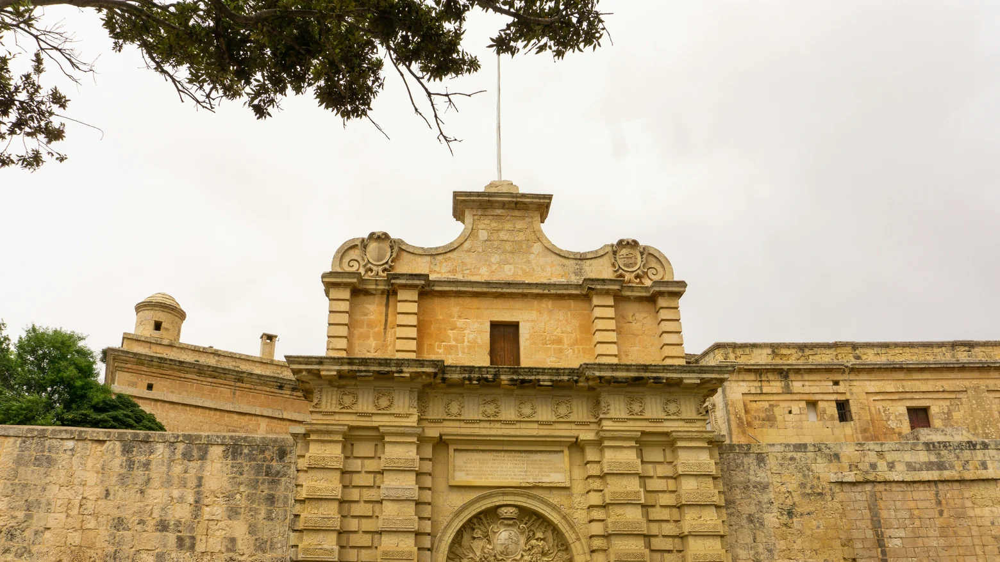

Fontanella Tea Garden
1 Bastion Street. The tea garden lists homemade cakes and food on its own site. Check the menu and opening times before heading to the bastion side of town.
Città Notabile · Malta
Palaces and squares inside the walls. Start at the limestone gate, choose a museum or the cathedral, and plan your arrival around the city’s vehicle access rules.

Mdina’s council traces the city’s fortified hill and the ditch that separated it from neighbouring Rabat. Immediately inside Main Gate, the National Museum of Natural History occupies Palazzo Vilhena on St Publius Square. Grand Master António Manoel de Vilhena commissioned the palace in 1724. Check the museum’s visitor page and its access statement for the entrance and facilities.
St Paul’s Cathedral and the Cathedral Museum give you a second destination inside the walls. The Metropolitan Chapter publishes tickets, access details and planned closures. If you are also visiting the Roman mosaics at Domvs Romana, look up its entrance separately outside the walled city.
1 Bastion Street. The tea garden lists homemade cakes and food on its own site. Check the menu and opening times before heading to the bastion side of town.
Misraħ il-Kunsill, opposite Palazzo Vilhena. The Xara Palace publishes the trattoria’s menu and location for anyone planning a meal near the gate.
Heritage Malta names the Mdina bus stop for the Natural History Museum. Malta Public Transport’s destination guide lists routes 50, 51, 52, 53 and 56 to Rabat. Use the journey planner to check the stop and direction on the day.
Vehicle entry and circulation inside Mdina are restricted. If you are booking a delivery or arranging a property viewing, confirm the precise address, applicable rules and a meeting point with the host. Refer to the vehicle access regulations and local council permit information.
The pin marks the mapped museum location just inside Main Gate. For entrance and access details, use Heritage Malta’s access statement.
Map data © OpenStreetMap contributors.
Editorial sources reviewed 17 November 2026.
Nexus Marketplace
See local homes and explore food, shops and everyday places around the neighbourhood.
Mapped places within 2 km of the centre. This can include nearby neighbourhoods.